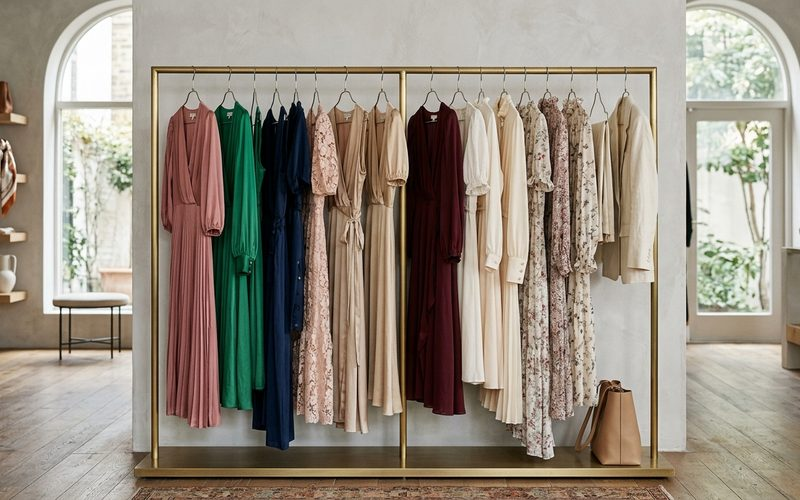

Se o blazer é o coringa do guarda-roupa feminino, o vestido midi é o par perfeito dele. O comprimento entre o joelho e o tornozelo é casual e sofisticado ao mesmo tempo, serve pro trabalho e pro lazer. Funciona em quase qualquer situação, pra quase qualquer biótipo.
Em brechós de curadoria, o vestido midi aparece numa variedade enorme de cortes, tecidos e épocas. Florais dos anos 70 em algodão cru, seda lisa dos anos 90, lã estruturada pro inverno, viscose fluida pro verão de BH. Cada versão conta uma história diferente e serve pra ocasiões diferentes.
O vestido midi wrap, com amarração na cintura, é o mais democrático: se ajusta a diferentes corpos e tem uma feminilidade relaxada que funciona em quase qualquer situação. O midi de corte reto, em tecido estruturado, é ótimo pro trabalho ou eventos mais formais. O midi com recortes na cintura ou cinto define a silhueta com elegância. E o midi rodado, em tecido fluido, tem uma leveza de movimento que poucos looks conseguem.
Pro trabalho, midi de corte reto com blazer e scarpin. Pro fim de semana, um floral midi com sandália rasteira e bolsa de palha resolve o verão mineiro. Pra eventos à noite, midi de veludo ou seda com salto fino e joias delicadas. E no outono/inverno de BH, camadas funcionam muito: midi com meia-calça escura, bota de cano alto e sobretudo é um dos melhores looks da estação fria.
Na hora de garimpar vestidos midi em brechó, preste atenção no caimento: o vestido tem que equilibrar peso nos ombros sem puxar ou criar linhas estranhas. Veja se o comprimento funciona pra sua altura. O midi fica melhor entre 5 e 15 cm abaixo do joelho. E confira o tecido: misturas com elastano podem ter perdido elasticidade com os anos, enquanto tecidos naturais envelhecem muito melhor.
O vestido midi de brechó tem uma vantagem sobre o de loja: ele já foi testado pelo tempo. Se chegou aqui em bom estado, é porque alguém cuidou bem dele, e isso é a melhor garantia de qualidade. Cada vestido midi garimpado no Outra Vez sobreviveu ao ciclo acelerado da moda porque tinha qualidade, corte e tecido pra isso. Agora está esperando por você.